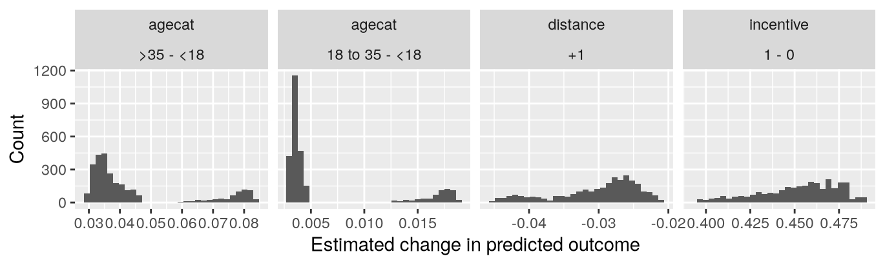
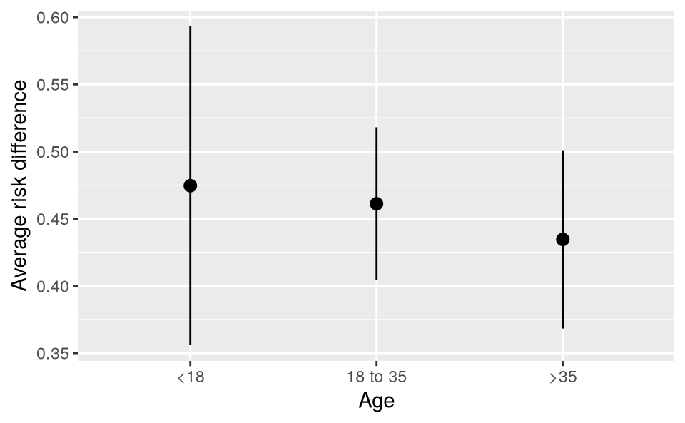
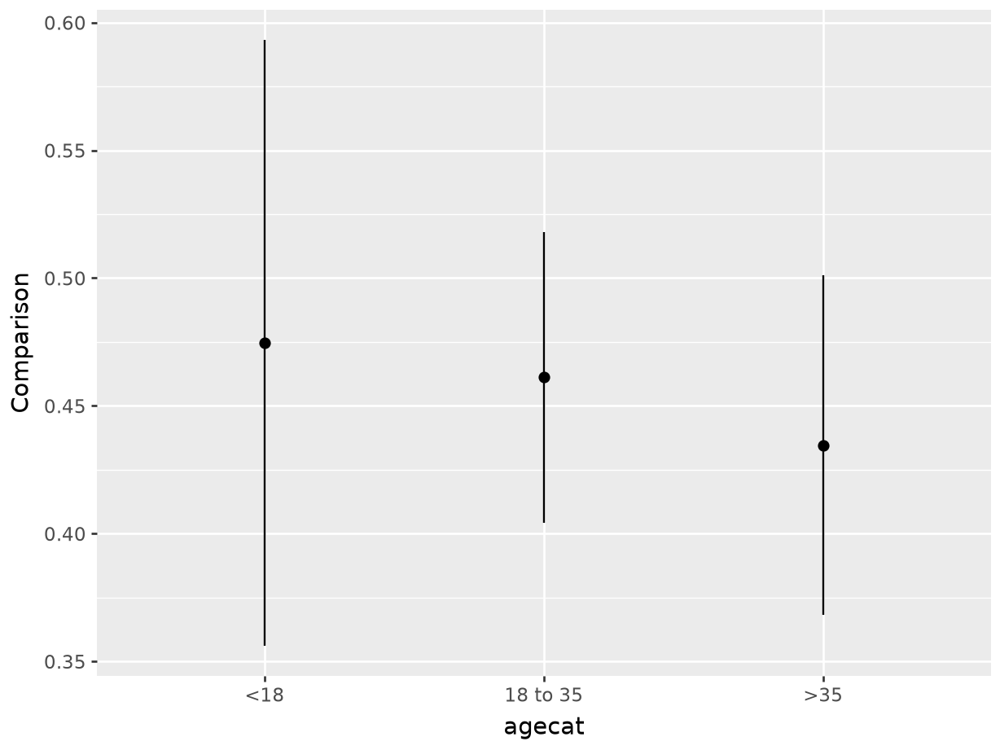
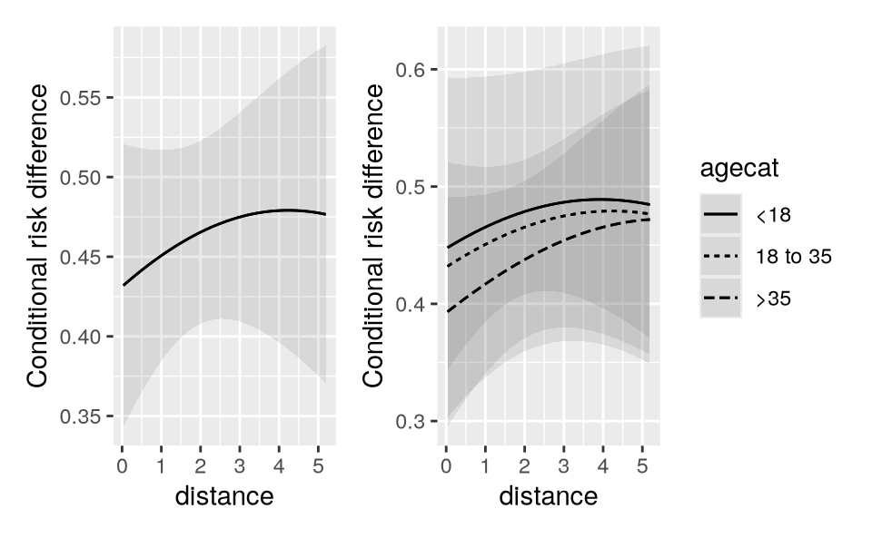
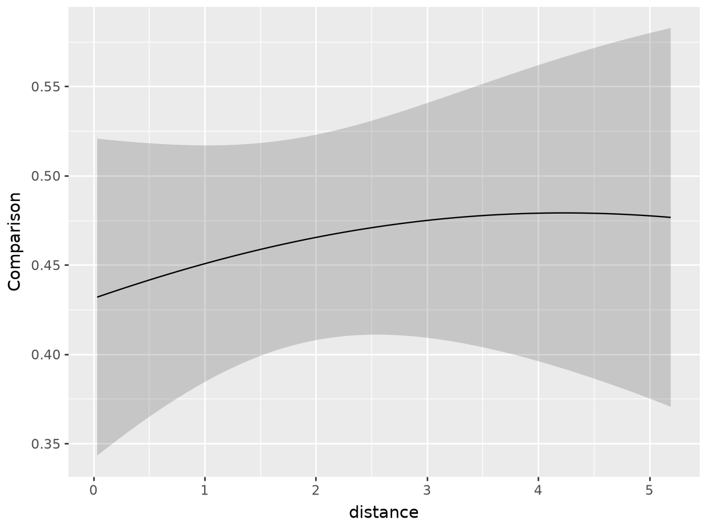
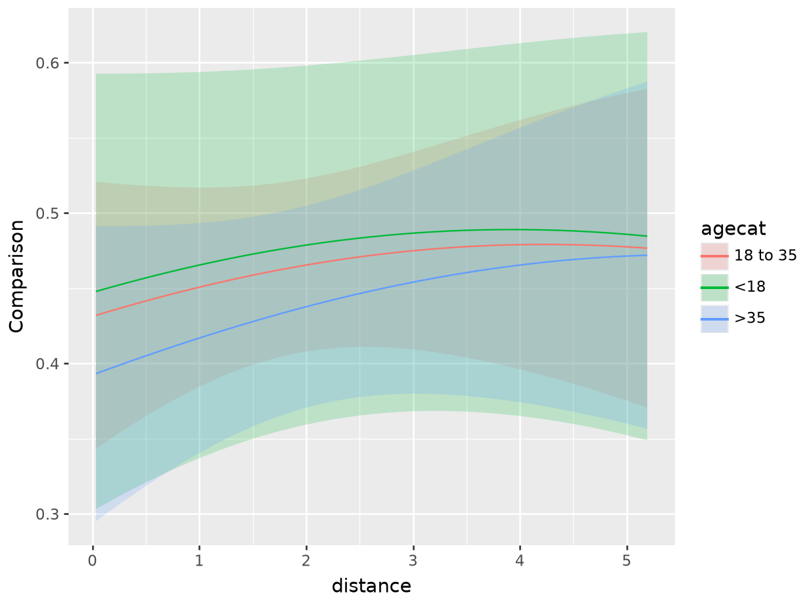

6 反事实比较
从模型到意义 - 中文翻译
来源：Vincent Arel-Bundock，《从模型到意义：如何在 R 和 Python 中解释统计模型》——第 6 章 反事实比较。 来源说明：截至 2026-09-19，公共仓库的修订版 870f15a0 尚未包含本章完整的 .qmd 源文件。本页面译自同日下载的公共 HTML 快照。R/Python 代码和图形因此以静态形式展示；上游代码未在本站重新执行。 网站文本（C）2025 Vincent Arel-Bundock，保留所有权利；marginaleffects 软件代码采用 GPL-3 许可。 本页面为中文译文，并非原文；译文依据本 Notes 网站使用的授权声明翻译并发布。
本书的核心论点是，统计模型的参数是复杂的量，并不总是具有直观的含义。与其试图直接解释它们，不如把参数视为“通往预测之路上的落脚石”。
在本章中，我们进一步说明，预测本身也可以成为进一步分析的跳板。我们将看到，如何将预测组合成反事实比较，从而量化两个变量之间的关联强度，或某个原因的效应。
反事实思维是科学探究和数据分析的基础。事实上，我们许多最重要的研究问题都可以表述为对假设世界的比较。
如果患者接受新药而不是安慰剂，生存的可能性会更高吗？
如果班级规模更小，标准化考试成绩会更高吗？
参加小额信贷项目会增加家庭收入吗？
保护政策会改善森林覆盖率吗？
要回答这类问题，研究者必须进行思想实验。他们必须做出反事实预测，然后比较这些预测。
假设我们希望估计保护政策对森林覆盖率的效应。首先，我们要问：一个没有保护政策的地区，其森林覆盖率是多少？然后，我们要问：如果在同一地区实施保护政策，森林覆盖率会是多少？最后，我们比较这两个量：在实施和不实施保护政策的反事实世界中，预期森林覆盖率之差是多少？
在此基础上，我们可以定义一大类感兴趣的量：
反事实比较是由具有不同预测变量值的两个或更多基于模型的预测构成的函数。
这个定义与第 2.1.3 节概述的因果推断理论密切相关。正如我们将看到的，估计干预效应的一种自然方式，是使用统计模型在两个反事实世界中做出预测，并比较这些预测。当因果识别条件得到满足时，这种反事实比较可以解释为 对 的效应度量。
即使因果识别条件不满足，反事实比较仍然是非常有意义的统计量。在这种情况下，它们可以被视为在保持其他变量不变时，两个变量之间关联强度的描述性度量。
第 6.1 节和第 6.2 节说明，大量目标估计量都可以表示为两个（或更多）预测的函数：对比、风险差异、比率、优势、提升等。第 6.3 节解释了如何在不同网格上聚合反事实比较，以计算平均处理效应（ATE）或条件平均处理效应（CATE）等感兴趣的量。第 6.4 节讨论标准误和置信区间，第 6.5 节展示如何比较不同的比较结果，以探索处理效应异质性。第 6.6 节最后给出一些数据可视化方面的建议。
6.1 数量
反事实比较是由具有不同预测变量值的两个或更多基于模型的预测构成的函数。要将这一数量付诸实践，我们必须做出三个决定。第一，我们希望估计其对结果变量的效应（或与结果变量的关联）的核心预测变量是什么？第二，在反事实世界中，核心预测变量有何不同？第三，我们使用什么函数来比较核心预测变量取不同值时得到的预测结果？
为固定记号，考虑这样一个简单情形：我们拟合一个以 \Y\为结果变量、以 \X\为核心预测变量的统计模型，并使用参数估计值计算预测。当变量 \X\被设为特定值 \x\时，基于模型的预测写作 \_{X=x}\
关注模型描述、数据描述或因果推断的分析者，可能希望估计当我们操纵预测变量 \_{X}\时，预测结果 \X\如何变化。例如，当 \X\增加 1 个单位、增加一个标准差，或当 \X\从一个特定值变为另一个特定值时，预测结果如何变化？
\\
在上面的每个例子中，我们都计算了核心预测变量 取不同值时两个预测结果之差。简单差异通常是解释的最佳起点，因为它简单直观、容易理解。但我们并不局限于使用这一函数。
\\
在预测结果 \_X\为概率的特殊情形下，\_{X=b}-_{X=a}\称为风险差异，\_{X=b}/_{X=a}\称为风险比，而 \ / \称为优势比。
本章其余部分将展示如何使用 marginaleffects 包计算并解释所有这些量。
作为示例，我们使用 Thornton 的数据（2008）拟合一个逻辑回归模型。结果变量是一个二元变量，表示研究参与者是否主动了解自己的 HIV 状态。随机化处理是一个二元变量，表示参与者是否获得了金钱激励。为了使模型设定更灵活并提高精度，我们将激励指标与另外两个预测变量交互：参与者的年龄类别以及其与检测中心的距离。
library(marginaleffects)
dat = get_dataset("thornton")
mod = glm(outcome ~ incentive * (agecat + distance),
data = dat, family = binomial)
summary(mod)
Coefficients:
Estimate Std. Error z value Pr(>|z|)
(Intercept) -0.48617 0.29621 -1.641 0.1007
incentive 2.05760 0.34421 5.978 <0.001
agecat18 to 35 0.07937 0.28872 0.275 0.7834
agecat>35 0.34522 0.29467 1.172 0.2414
distance -0.18440 0.07236 -2.548 0.0108
incentive:agecat18 to 35 -0.05850 0.33500 -0.175 0.8614
incentive:agecat>35 -0.12468 0.34242 -0.364 0.7158
incentive:distance 0.02304 0.08256 0.279 0.7802
import polars as pl
import numpy as np
from marginaleffects import *
from plotnine import *
from scipy.stats import norm
from statsmodels.formula.api import logit, ols
dat = get_dataset("thornton")
dat_pd = dat.to_pandas()
dat_pd['agecat'] = dat_pd['agecat'].astype('category')
mod = logit("outcome ~ incentive * (agecat + distance)",
data=dat_pd).fit()Optimization terminated successfully.
Current function value: 0.535929
Iterations 5
mod.summary()|——————|——————|——————-|———–|
Logit Regression Results {.simpletable .caption-top .table .table-sm .table-striped .small}
|——————————–|———|———|——–|———-|———|———|
这是一个简单的逻辑回归模型。然而，由于模型包含交互作用和非线性链接函数，对大多数分析者而言，解释原始模型系数都很困难，对非专业人士而言则几乎不可能。
反事实比较是系数估计值的一个有吸引力的替代方案，在解释方面具有许多优点。首先，反事实比较可以直接在结果变量的尺度上表达，而不必使用对数优势比之类的复杂函数。其次，反事实比较直接对应于许多人想到处理效应时的直觉：当预测变量发生变化时，我们预期结果变量会发生怎样的变化？最后，正如后续章节所示，marginaleffects 包使计算反事实比较变得非常简单。数据分析者可以采用同样的与模型无关的工作流程，无论选择估计哪一类模型，都应用类似的估计后步骤。
6.1.1 第一步：二元处理的风险差异
首先，让我们考虑一个简单的目标估计量：二元处理发生变化所对应的风险差异。具体而言，我们将估计把 incentive 变量从 0 操作成 1 时 outcome 的预期变化。
估计这类数量时需要考虑的一个重要因素是，反事实比较是条件性数量。除了最简单的情形外，比较结果都取决于模型中所有预测变量的值。数据集中的每个个体都可能对应不同的反事实比较。因此，每当分析者计算反事实比较时，都必须明确规定核心预测变量的值，同时也要规定模型中所有其他协变量的值。
第 6.2 节介绍了定义预测变量特征组合网格的不同方式。目前，我们将聚焦于一个具有任意特征的个体。
grid = data.frame(distance = 2, agecat = "18 to 35", incentive = 1)
grid
distance agecat incentive
1 2 18 to 35 1
grid = pl.DataFrame({
"distance": 2,
"agecat": ["18 to 35"],
"incentive": 1
})
print(grid)shape: (1, 3)
┌──────────┬──────────┬───────────┐
│ distance ┆ agecat ┆ incentive │
│ --- ┆ --- ┆ --- │
│ i32 ┆ str ┆ i32 │
╞══════════╪══════════╪═══════════╡
│ 2 ┆ 18 to 35 ┆ 1 │
└──────────┴──────────┴───────────┘我们的目标是估计这样一个人的风险差异：年龄在 18 至 35 岁之间，且距离检测中心 2 个单位。
\_{i=1,d=2,a=} - _{i=0,d=2,a=}\
要计算这一数量，我们必须在保持个体其他特征不变的情况下，比较有无激励时基于模型的预测。使用简单的基础 R 命令，我们操作网格、进行预测，并比较这些预测。
# Counterfactual grids of predictor values
g_treatment = transform(grid, incentive = 1)
g_control = transform(grid, incentive = 0)
# Counterfactual predictions
p_treatment = predictions(mod, newdata = g_treatment)$estimate
p_control = predictions(mod, newdata = g_control)$estimate
# Counterfactual comparison
p_treatment - p_control
g_treatment = grid.with_columns(pl.lit(1).alias("incentive"))
g_control = grid.with_columns(pl.lit(0).alias("incentive"))
p_treatment = mod.predict(g_treatment.to_pandas())
p_control = mod.predict(g_control.to_pandas())
print(p_treatment - p_control)0 0.465402
dtype: float64[1] 0.465402
comparisons(mod, variables = "incentive", newdata = grid)shape: (1, 7)
┌──────────┬───────────┬──────┬─────────┬─────┬───────┬───────┐
│ Estimate ┆ Std.Error ┆ z ┆ P(>|z|) ┆ S ┆ 2.5% ┆ 97.5% │
│ --- ┆ --- ┆ --- ┆ --- ┆ --- ┆ --- ┆ --- │
│ str ┆ str ┆ str ┆ str ┆ str ┆ str ┆ str │
╞══════════╪═══════════╪══════╪═════════╪═════╪═══════╪═══════╡
│ 0.465 ┆ 0.0293 ┆ 15.9 ┆ 0 ┆ inf ┆ 0.408 ┆ 0.523 │
└──────────┴───────────┴──────┴─────────┴─────┴───────┴───────┘
Term: incentive
Contrast: 1 - 0使用 marginaleffects 包中的 comparisons() 函数，可以更容易地得到同一个估计值，同时获得标准误和检验统计量。
comparisons(mod, variables = "incentive", newdata = grid)
|———-|————|——|————-|——-|——–|
comparisons(mod,
variables="incentive",
newdata=grid)shape: (1, 7)
┌──────────┬───────────┬──────┬─────────┬─────┬───────┬───────┐
│ Estimate ┆ Std.Error ┆ z ┆ P(>|z|) ┆ S ┆ 2.5% ┆ 97.5% │
│ --- ┆ --- ┆ --- ┆ --- ┆ --- ┆ --- ┆ --- │
│ str ┆ str ┆ str ┆ str ┆ str ┆ str ┆ str │
╞══════════╪═══════════╪══════╪═════════╪═════╪═══════╪═══════╡
│ 0.465 ┆ 0.0293 ┆ 15.9 ┆ 0 ┆ inf ┆ 0.408 ┆ 0.523 │
└──────────┴───────────┴──────┴─────────┴─────┴───────┴───────┘
Term: incentive
Contrast: 1 - 0我们的模型表明，对于一名年龄在 18 至 35 岁、距离检测中心 2 个单位的参与者，从对照组转到处理组，会使 outcome 等于 1 的预测概率增加 \0.465=46.5\个百分点。
这个结果很有意思，但需要提醒一点。在本章中，我们将把反事实比较解释为核心预测变量发生变化对模型预测的结果变量所产生的效应度量。这既是关于拟合模型行为的论断1，也是关于核心预测变量与结果变量之间估计关联的描述性论断。2若要进一步赋予反事实比较以因果解释，就需要做出强假设。第 8 章将详细讨论这些假设。
6.1.2 比较函数
到目前为止，我们仅通过考察预测结果之差来度量预测变量变化的效应。差异通常是解释的最佳起点，因为它简单直观、容易理解。不过，在某些情境下，使用比率、提升或优势比等不同函数来比较反事实预测也是合理的。
要计算 incentive 变化所对应的预测结果比率，我们使用 comparison="ratio" 参数。
\\
comparisons(mod,
variables = "incentive",
comparison = "ratio",
hypothesis = 1,
newdata = grid)
|———-|————|—–|————-|——-|——–|
comparisons(mod,
variables = "incentive",
comparison = "ratio",
hypothesis = 1,
newdata = grid)shape: (1, 7)
┌──────────┬───────────┬─────┬─────────┬──────┬──────┬───────┐
│ Estimate ┆ Std.Error ┆ z ┆ P(>|z|) ┆ S ┆ 2.5% ┆ 97.5% │
│ --- ┆ --- ┆ --- ┆ --- ┆ --- ┆ --- ┆ --- │
│ str ┆ str ┆ str ┆ str ┆ str ┆ str ┆ str │
╞══════════╪═══════════╪═════╪═════════╪══════╪══════╪═══════╡
│ 2.48 ┆ 0.211 ┆ 7 ┆ 3.3e-12 ┆ 38.1 ┆ 2.06 ┆ 2.89 │
└──────────┴───────────┴─────┴─────────┴──────┴──────┴───────┘
Term: incentive
Contrast: 1 / 0对于一名处于处理组、年龄在 18 至 35 岁且距离检测中心 2 个单位的参与者，其预测结果几乎是具有相同社会人口学特征的对照组参与者的 2.5 倍。注意，在上面的代码中，我们将 hypothesis=1 设为检验这两个预测概率相同（比率为 1）的原假设。标准误很小，\z\ 统计量很大。
因此，我们可以拒绝处理组和对照组预测结果相同的原假设。我们可以拒绝这样的假设：处理组参与者（incentive=1）和对照组参与者（incentive=0）获得检测结果的预测概率之比为 1。
要计算提升，我们可以采用相同的方法，将 comparison="lift" 设定为相应值。
\\
comparisons(mod,
variables = "incentive",
comparison = "lift",
newdata = grid)
|———-|————|—–|————-|——-|——–|
comparisons(mod,
variables = "incentive",
comparison = "lift",
hypothesis = 1,
newdata = grid)shape: (1, 7)
┌──────────┬───────────┬──────┬─────────┬──────┬──────┬───────┐
│ Estimate ┆ Std.Error ┆ z ┆ P(>|z|) ┆ S ┆ 2.5% ┆ 97.5% │
│ --- ┆ --- ┆ --- ┆ --- ┆ --- ┆ --- ┆ --- │
│ str ┆ str ┆ str ┆ str ┆ str ┆ str ┆ str │
╞══════════╪═══════════╪══════╪═════════╪══════╪══════╪═══════╡
│ 1.48 ┆ 0.211 ┆ 2.26 ┆ 0.0241 ┆ 5.37 ┆ 1.06 ┆ 1.89 │
└──────────┴───────────┴──────┴─────────┴──────┴──────┴───────┘
Term: incentive
Contrast: lift最后值得注意的是，comparison 参数接受任意函数。这一功能非常强大，因为它允许分析者指定一个完全自定义的比较，在 hi 预测（例如处理组）与 lo 预测（例如对照组）之间进行比较。作为示例，我们基于平均预测计算一个对数优势比。3
lnor = function(hi, lo) {
log((mean(hi) / (1 - mean(hi))) / (mean(lo) / (1 - mean(lo))))
}
comparisons(mod,
variables = "incentive",
comparison = lnor)
|———-|————|——|————-|——-|——–|
def lnor(hi, lo):
hi = np.asarray(hi)
lo = np.asarray(lo)
return np.log((hi.mean() / (1 - hi.mean())) / (lo.mean() / (1 - lo.mean())))
comparisons(mod,
variables="incentive",
comparison=lnor)shape: (1, 7)
┌──────────┬───────────┬──────┬─────────┬─────┬──────┬───────┐
│ Estimate ┆ Std.Error ┆ z ┆ P(>|z|) ┆ S ┆ 2.5% ┆ 97.5% │
│ --- ┆ --- ┆ --- ┆ --- ┆ --- ┆ --- ┆ --- │
│ str ┆ str ┆ str ┆ str ┆ str ┆ str ┆ str │
╞══════════╪═══════════╪══════╪═════════╪═════╪══════╪═══════╡
│ 2 ┆ 0.0991 ┆ 20.2 ┆ 0 ┆ inf ┆ 1.8 ┆ 2.19 │
└──────────┴───────────┴──────┴─────────┴─────┴──────┴───────┘
Term: incentive
Contrast: custom6.2 预测变量
模型中的预测变量可以分为两类：核心变量和调整变量。核心变量是反事实分析中的关键预测变量，也就是我们希望量化其对结果变量的效应（或与结果变量的关联）的变量。相比之下，调整变量（或控制变量）是主要分析中的附带变量。将它们纳入模型，可以增加模型的灵活性、改善拟合、控制混杂因素，或检验处理效应是否在不同人群亚组之间有所变化。不过，在反事实分析中，调整变量本身的效应并不是内在关注的对象。4
如上所述，反事实比较是条件性数量，这意味着它们通常取决于模型中所有预测变量的值。因此，在计算比较结果时，我们必须决定在预测变量空间的什么位置对其进行评估。我们必须决定为核心变量和调整变量分别赋予哪些值。
6.2.1 核心变量
估计反事实比较时，我们的目标是确定一个或多个核心预测变量发生变化时，预测结果会怎样变化。显然，我们感兴趣的变化类型取决于核心预测变量的性质。下面考虑四种常见情形：二元变量、分类变量、数值变量和交叉比较。
为便于教学，我们依次将模型中的每个预测变量都视为核心变量：incentive、agecat 和 distance。不过需要注意的是，在 Thornton（2008）研究中，只有 incentive 变量经过随机化。在大多数现实应用中，每个统计模型通常只有一到两个核心预测变量。5
6.2.1.1 二元预测变量的变化
默认情况下，当核心预测变量为二元变量时，marginaleffects 返回从对照组（0）变为处理组（1）所对应的预测结果差异。
comparisons(mod, variables = "incentive", newdata = grid)
|———-|————|——|————-|——-|——–|
comparisons(mod,
variables="incentive",
newdata=grid)shape: (1, 7)
┌──────────┬───────────┬──────┬─────────┬─────┬───────┬───────┐
│ Estimate ┆ Std.Error ┆ z ┆ P(>|z|) ┆ S ┆ 2.5% ┆ 97.5% │
│ --- ┆ --- ┆ --- ┆ --- ┆ --- ┆ --- ┆ --- │
│ str ┆ str ┆ str ┆ str ┆ str ┆ str ┆ str │
╞══════════╪═══════════╪══════╪═════════╪═════╪═══════╪═══════╡
│ 0.465 ┆ 0.0293 ┆ 15.9 ┆ 0 ┆ inf ┆ 0.408 ┆ 0.523 │
└──────────┴───────────┴──────┴─────────┴─────┴───────┴───────┘
Term: incentive
Contrast: 1 - 0如果分析者希望计算相反方向的变化效应，可以使用列表语法明确指定该变化。
comparisons(mod, variables = list("incentive" = c(1, 0)), newdata = grid)
|———-|————|——-|————-|——–|——–|
comparisons(mod,
variables={"incentive" : [1, 0]},
newdata=grid)shape: (1, 7)
┌──────────┬───────────┬───────┬─────────┬─────┬────────┬────────┐
│ Estimate ┆ Std.Error ┆ z ┆ P(>|z|) ┆ S ┆ 2.5% ┆ 97.5% │
│ --- ┆ --- ┆ --- ┆ --- ┆ --- ┆ --- ┆ --- │
│ str ┆ str ┆ str ┆ str ┆ str ┆ str ┆ str │
╞══════════╪═══════════╪═══════╪═════════╪═════╪════════╪════════╡
│ -0.465 ┆ 0.0293 ┆ -15.9 ┆ 0 ┆ inf ┆ -0.523 ┆ -0.408 │
└──────────┴───────────┴───────┴─────────┴─────┴────────┴────────┘
Term: incentive
Contrast: 0 - 1在 incentive 变量上从处理组转到对照组，与 outcome 等于 1 的预测概率变化 -47 个百分点相关。
6.2.1.2 分类预测变量的变化
当我们关注具有多个水平的分类变量发生变化时，也可以采用相同的方法。例如，如果想了解 agecat 变量的变化如何影响 outcome 等于 1 的预测概率，可以使用 variables 参数。
comparisons(mod, variables = "agecat", newdata = grid)
|—————–|———-|————|——-|————-|———|——–|
comparisons(mod, variables="agecat", newdata=grid)shape: (2, 8)
┌────────────────┬──────────┬───────────┬───────┬─────────┬───────┬─────────┬────────┐
│ Contrast ┆ Estimate ┆ Std.Error ┆ z ┆ P(>|z|) ┆ S ┆ 2.5% ┆ 97.5% │
│ --- ┆ --- ┆ --- ┆ --- ┆ --- ┆ --- ┆ --- ┆ --- │
│ str ┆ str ┆ str ┆ str ┆ str ┆ str ┆ str ┆ str │
╞════════════════╪══════════╪═══════════╪═══════╪═════════╪═══════╪═════════╪════════╡
│ 18 to 35 - <18 ┆ 0.00359 ┆ 0.0294 ┆ 0.122 ┆ 0.903 ┆ 0.148 ┆ -0.054 ┆ 0.0612 │
│ >35 - <18 ┆ 0.0359 ┆ 0.0294 ┆ 1.22 ┆ 0.222 ┆ 2.17 ┆ -0.0218 ┆ 0.0935 │
└────────────────┴──────────┴───────────┴───────┴─────────┴───────┴─────────┴────────┘
Term: agecat从<18类别变为18 to 35类别，会使 outcome 等于 1 的预测概率增加 0.4 个百分点。从<18年龄组变为>35年龄组，会使预测概率增加 3.6 个百分点。
默认情况下，comparisons() 函数返回分类预测变量的每个水平与其参考水平（或第一个类别）之间的比较。我们可以修改 variables 参数，以比较指定类别，或依次将所有类别与其前一个水平比较：<18 到 18 to 35，以及 18 to 35 到 >35。
# Specific comparison
comparisons(mod,
variables = list("agecat" = c("18 to 35", ">35")),
newdata = grid)
# Sequential comparisons
comparisons(mod,
variables = list("agecat" = "sequential"),
newdata = grid)
comparisons(mod,
variables={"agecat" : ["18 to 35", ">35"]},
newdata=grid)
comparisons(mod,
variables={"agecat" : "sequential"},
newdata=grid)6.2.1.3 数值预测变量的变化
当核心预测变量为数值变量时，我们同样可以使用 variables 参数。
comparisons(mod, variables = "distance", newdata = grid)
|———-|————|——-|————-|———|———|
comparisons(mod, variables="distance", newdata=grid)shape: (1, 7)
┌──────────┬───────────┬───────┬──────────┬──────┬────────┬─────────┐
│ Estimate ┆ Std.Error ┆ z ┆ P(>|z|) ┆ S ┆ 2.5% ┆ 97.5% │
│ --- ┆ --- ┆ --- ┆ --- ┆ --- ┆ --- ┆ --- │
│ str ┆ str ┆ str ┆ str ┆ str ┆ str ┆ str │
╞══════════╪═══════════╪═══════╪══════════╪══════╪════════╪═════════╡
│ -0.0276 ┆ 0.00682 ┆ -4.05 ┆ 5.27e-05 ┆ 14.2 ┆ -0.041 ┆ -0.0143 │
└──────────┴───────────┴───────┴──────────┴──────┴────────┴─────────┘
Term: distance
Contrast: +1该表显示了 distance 增加 1 个单位对 outcome 预测值的效应。重要的是，这对应于从预测变量网格中编码的 distance 值增加 1 个单位。
grid
distance agecat incentive
1 2 18 to 35 1
gridshape: (1, 3)
|———-|————|———–|
对于一名年龄在 18 至 35 岁且处于处理组的个体，distance 变量从 2 增加到 3，与结果变量预测概率变化 -2.9 个百分点相关。
我们可能会关注核心预测变量 distance 的不同变化幅度。例如，distance 增加 5 个单位（或一个标准差）对结果变量预测值的效应。或者，分析者可能希望评估 distance 在两个特定值之间的变化效应，或在数据的四分位距（或完整范围）内的变化效应。使用 variables 参数可以轻松实现所有这些选项。
# Increase of 5 units
comparisons(mod, variables = list("distance" = 5), newdata = grid)
# Increase of 1 standard deviation
comparisons(mod, variables = list("distance" = "sd"), newdata = grid)
# Change between specific values
comparisons(mod, variables = list("distance" = c(0, 3)), newdata = grid)
# Change across the interquartile range
comparisons(mod, variables = list("distance" = "iqr"), newdata = grid)
# Change across the full range
comparisons(mod, variables = list("distance" = "minmax"), newdata = grid)
# Increase of 5 units
comparisons(mod, variables={"distance": 5}, newdata=grid)
# Increase of 1 standard deviation
comparisons(mod, variables={"distance": "sd"}, newdata=grid)
# Change between specific values
comparisons(mod, variables={"distance" : [0, 3]}, newdata=grid)
# Change across the interquartile range
comparisons(mod, variables={"distance" : "iqr"}, newdata=grid)
# Change across the full range
comparisons(mod, variables={"distance": "minmax"}, newdata=grid)6.2.1.4 交叉比较
有时，分析者希望评估同时操纵两个预测变量的联合或组合效应。例如，在一项医学研究中，我们可能关注同时接受新治疗并改变饮食的人群的生存率变化。在当前示例中，如果同时修改 distance 和 incentive 变量，outcome 的预测概率会变化多少，也可能很有意义。我们使用 cross 参数进行检验。
cmp = comparisons(mod,
variables = c("incentive", "distance"),
cross = TRUE,
newdata = grid)
cmp
|————-|————–|———-|————|——|————-|——-|——–|
comparisons(mod,
variables = ["incentive", "distance"],
cross = True,
newdata = grid)shape: (1, 9)
┌──────────────┬─────────────┬──────────┬───────────┬───┬─────────┬─────┬───────┬───────┐
│ C: incentive ┆ C: distance ┆ Estimate ┆ Std.Error ┆ … ┆ P(>|z|) ┆ S ┆ 2.5% ┆ 97.5% │
│ --- ┆ --- ┆ --- ┆ --- ┆ ┆ --- ┆ --- ┆ --- ┆ --- │
│ str ┆ str ┆ str ┆ str ┆ ┆ str ┆ str ┆ str ┆ str │
╞══════════════╪═════════════╪══════════╪═══════════╪═══╪═════════╪═════╪═══════╪═══════╡
│ 1 - 0 ┆ +1 ┆ 0.431 ┆ 0.0307 ┆ … ┆ 0 ┆ inf ┆ 0.371 ┆ 0.491 │
└──────────────┴─────────────┴──────────┴───────────┴───┴─────────┴─────┴───────┴───────┘
Term: cross这些结果表明，distance 同时增加 1 个单位、incentive 从 0 变为 1，与预测结果变化 0.437 相关。
6.2.2 调整变量
在典型的反事实分析中，研究者并不关注调整变量本身的变化。然而，由于反事实比较的值取决于在预测变量空间中的评估位置，我们必须明确规定核心变量和调整变量的完整网格。
与第 5 章中为不同特征组合计算预测类似，我们现在将在经验网格、感兴趣网格、代表性网格和平衡网格上估计反事实比较。
6.2.2.1 经验分布
默认情况下，comparisons() 函数为用于拟合模型的原始数据框中的每一行返回估计值。Thornton（2008）数据集包含 2825 个完整观测（删除缺失数据后），因此下一条命令将产生 2825 个估计值。
comparisons(mod, variables = "incentive")
|—-|—-|—-|—-|—-|—-|
comparisons(mod, variables = "incentive")shape: (2_825, 7)
┌──────────┬───────────┬──────┬──────────┬──────┬───────┬───────┐
│ Estimate ┆ Std.Error ┆ z ┆ P(>|z|) ┆ S ┆ 2.5% ┆ 97.5% │
│ --- ┆ --- ┆ --- ┆ --- ┆ --- ┆ --- ┆ --- │
│ str ┆ str ┆ str ┆ str ┆ str ┆ str ┆ str │
╞══════════╪═══════════╪══════╪══════════╪══════╪═══════╪═══════╡
│ 0.458 ┆ 0.0689 ┆ 6.64 ┆ 3.77e-11 ┆ 34.6 ┆ 0.323 ┆ 0.593 │
│ 0.463 ┆ 0.0666 ┆ 6.95 ┆ 4.61e-12 ┆ 37.7 ┆ 0.332 ┆ 0.593 │
│ 0.488 ┆ 0.0611 ┆ 7.99 ┆ 2e-15 ┆ 48.8 ┆ 0.368 ┆ 0.608 │
│ 0.482 ┆ 0.0603 ┆ 7.99 ┆ 2e-15 ┆ 48.8 ┆ 0.364 ┆ 0.6 │
│ 0.471 ┆ 0.0632 ┆ 7.45 ┆ 1.19e-13 ┆ 42.9 ┆ 0.347 ┆ 0.595 │
│ … ┆ … ┆ … ┆ … ┆ … ┆ … ┆ … │
│ 0.423 ┆ 0.037 ┆ 11.4 ┆ 0 ┆ inf ┆ 0.35 ┆ 0.495 │
│ 0.416 ┆ 0.0393 ┆ 10.6 ┆ 0 ┆ inf ┆ 0.339 ┆ 0.493 │
│ 0.423 ┆ 0.037 ┆ 11.4 ┆ 0 ┆ inf ┆ 0.35 ┆ 0.495 │
│ 0.428 ┆ 0.0355 ┆ 12 ┆ 0 ┆ inf ┆ 0.358 ┆ 0.498 │
│ 0.454 ┆ 0.0377 ┆ 12 ┆ 0 ┆ inf ┆ 0.38 ┆ 0.528 │
└──────────┴───────────┴──────┴──────────┴──────┴───────┴───────┘
Term: incentive
Contrast: 1 - 0如果不指定 variables 参数，comparisons() 会为所有变量计算不同的差异。这里有 4 种可能的差异，因此得到 \4 =11300\行。
cmp = comparisons(mod)
nrow(cmp)
[1] 11300
cmp
|—-|—-|—-|—-|—-|—-|—-|—-|
cmp = comparisons(mod)
cmp.shape(11300, 22)
cmpshape: (11_300, 9)
┌───────────┬────────────────┬──────────┬───────────┬───┬─────────┬───────┬─────────┬───────┐
│ Term ┆ Contrast ┆ Estimate ┆ Std.Error ┆ … ┆ P(>|z|) ┆ S ┆ 2.5% ┆ 97.5% │
│ --- ┆ --- ┆ --- ┆ --- ┆ ┆ --- ┆ --- ┆ --- ┆ --- │
│ str ┆ str ┆ str ┆ str ┆ ┆ str ┆ str ┆ str ┆ str │
╞═══════════╪════════════════╪══════════╪═══════════╪═══╪═════════╪═══════╪═════════╪═══════╡
│ agecat ┆ 18 to 35 - <18 ┆ 0.0184 ┆ 0.0665 ┆ … ┆ 0.782 ┆ 0.355 ┆ -0.112 ┆ 0.149 │
│ agecat ┆ 18 to 35 - <18 ┆ 0.0181 ┆ 0.0655 ┆ … ┆ 0.782 ┆ 0.355 ┆ -0.11 ┆ 0.147 │
│ agecat ┆ 18 to 35 - <18 ┆ 0.0151 ┆ 0.0544 ┆ … ┆ 0.781 ┆ 0.357 ┆ -0.0916 ┆ 0.122 │
│ agecat ┆ 18 to 35 - <18 ┆ 0.0165 ┆ 0.0593 ┆ … ┆ 0.781 ┆ 0.356 ┆ -0.0998 ┆ 0.133 │
│ agecat ┆ 18 to 35 - <18 ┆ 0.0176 ┆ 0.0634 ┆ … ┆ 0.782 ┆ 0.356 ┆ -0.107 ┆ 0.142 │
│ … ┆ … ┆ … ┆ … ┆ … ┆ … ┆ … ┆ … ┆ … │
│ incentive ┆ 1 - 0 ┆ 0.423 ┆ 0.037 ┆ … ┆ 0 ┆ inf ┆ 0.35 ┆ 0.495 │
│ incentive ┆ 1 - 0 ┆ 0.416 ┆ 0.0393 ┆ … ┆ 0 ┆ inf ┆ 0.339 ┆ 0.493 │
│ incentive ┆ 1 - 0 ┆ 0.423 ┆ 0.037 ┆ … ┆ 0 ┆ inf ┆ 0.35 ┆ 0.495 │
│ incentive ┆ 1 - 0 ┆ 0.428 ┆ 0.0355 ┆ … ┆ 0 ┆ inf ┆ 0.358 ┆ 0.498 │
│ incentive ┆ 1 - 0 ┆ 0.454 ┆ 0.0377 ┆ … ┆ 0 ┆ inf ┆ 0.38 ┆ 0.528 │
└───────────┴────────────────┴──────────┴───────────┴───┴─────────┴───────┴─────────┴───────┘由于 comparisons() 的输出是一个简单数据框，我们可以轻松绘制个体特异性风险差异的完整分布。
library(ggplot2)
ggplot(cmp, aes(x = estimate)) +
geom_histogram(bins = 30) +
facet_grid(. ~ term + contrast, scales = "free") +
labs(x = "Estimated change in predicted outcome", y = "Count")

图 6.1 的 x 轴显示预测变量变化对结果变量预测值的估计效应，y 轴显示每个估计值在完整样本中的出现频率。
可以看到相当明显的异质性。例如，考虑最右侧的面板，它绘制了 incentive 变量个体层面对比的分布。该面板显示，对于某些参与者，模型预测从对照条件转到处理条件会使 outcome 等于 1 的预测概率增加约 0.5；而对于另一些参与者，这一变化的估计效应可能低至 0.4。
6.2.2.2 感兴趣的网格
在某些情境下，我们希望估计具有特定感兴趣特征的个体的比较结果。为此，可以向 newdata 参数提供一个数据框。
下面的代码展示了若干具有感兴趣特征的个体中，incentive 变化所对应的 outcome 预测概率预期变化。与第 5 章一样，我们使用 datagrid() 函数，方便地创建感兴趣特征组合的网格。
comparisons(mod,
variables = "incentive",
newdata = datagrid(agecat = unique, distance = mean))
comparisons(mod,
variables = "incentive", newdata = datagrid(
agecat = dat["agecat"].unique(),
distance = dat["distance"].mean())) |———-|———-|———-|————|——-|————-|——-|——–|
注意，incentive 对 outcome=1 预测概率的估计效应会随参与者年龄而不同。事实上，我们的模型估计，处理组与对照组之间的差异在中间年龄类别为 46.6 个百分点，而在年龄较大的类别为 43.8 个百分点。
6.2.2.3 代表性网格
另一种常见做法是计算“在均值处”的比较或风险差异。其思路是为一个特征完全处于平均水平或众数水平的个体创建一个“代表性”或“合成”特征组合，然后报告这一特定假想个体的比较结果。为此，我们在 newdata 参数中使用“mean”快捷方式。
comparisons(mod, variables = "incentive", newdata = "mean")
comparisons(mod, variables = "incentive", newdata = "mean")|———-|————|——|————-|——-|——–|
这种方法的主要优点是，从计算角度看，它快速且成本低。缺点是其解释有些含糊。总体中通常根本不存在一个在所有维度上都恰好处于平均水平的个体，而且我们并不总能清楚地说明为什么要关注这样的个体。这一点很重要，因为在某些情况下，“均值处的比较”可能与“平均比较”存在显著差异。6
6.2.2.4 平衡网格
第3.2 节介绍的平衡网格包含分类变量的所有唯一组合，同时将数值变量固定在其均值上。这在实验情境中特别有用：样本并不代表目标总体，而且我们希望平等对待每一种处理条件组合。
cmp = comparisons(mod, variables = "incentive", newdata = "balanced")
as.data.frame(cmp)
rowid term contrast estimate std.error statistic p.value
1 1 incentive 1 - 0 0.4788406 0.06084969 7.869237 3.568098e-15
2 2 incentive 1 - 0 0.4788406 0.06084969 7.869237 3.568098e-15
3 3 incentive 1 - 0 0.4655786 0.02933085 15.873343 9.693788e-57
4 4 incentive 1 - 0 0.4655786 0.02933085 15.873343 9.693788e-57
5 5 incentive 1 - 0 0.4379624 0.03423943 12.791169 1.836892e-37
6 6 incentive 1 - 0 0.4379624 0.03423943 12.791169 1.836892e-37
s.value conf.low conf.high agecat distance incentive predicted_lo
1 47.99377 0.3595774 0.5981038 <18 2.014541 0 0.2978325
2 47.99377 0.3595774 0.5981038 <18 2.014541 1 0.2978325
3 186.07284 0.4080912 0.5230660 18 to 35 2.014541 0 0.3146933
4 186.07284 0.4080912 0.5230660 18 to 35 2.014541 1 0.3146933
5 122.03407 0.3708543 0.5050704 >35 2.014541 0 0.3746268
6 122.03407 0.3708543 0.5050704 >35 2.014541 1 0.3746268
predicted_hi predicted
1 0.7766732 NA
2 0.7766732 NA
3 0.7802718 NA
4 0.7802718 NA
5 0.8125892 NA
6 0.8125892 NA
comparisons(mod, variables = "incentive", newdata = "balanced")shape: (6, 7)
┌──────────┬───────────┬──────┬──────────┬──────┬───────┬───────┐
│ Estimate ┆ Std.Error ┆ z ┆ P(>|z|) ┆ S ┆ 2.5% ┆ 97.5% │
│ --- ┆ --- ┆ --- ┆ --- ┆ --- ┆ --- ┆ --- │
│ str ┆ str ┆ str ┆ str ┆ str ┆ str ┆ str │
╞══════════╪═══════════╪══════╪══════════╪══════╪═══════╪═══════╡
│ 0.479 ┆ 0.0608 ┆ 7.87 ┆ 5.11e-15 ┆ 47.5 ┆ 0.36 ┆ 0.598 │
│ 0.479 ┆ 0.0608 ┆ 7.87 ┆ 5.11e-15 ┆ 47.5 ┆ 0.36 ┆ 0.598 │
│ 0.466 ┆ 0.0293 ┆ 15.9 ┆ 0 ┆ inf ┆ 0.408 ┆ 0.523 │
│ 0.466 ┆ 0.0293 ┆ 15.9 ┆ 0 ┆ inf ┆ 0.408 ┆ 0.523 │
│ 0.438 ┆ 0.0342 ┆ 12.8 ┆ 0 ┆ inf ┆ 0.371 ┆ 0.505 │
│ 0.438 ┆ 0.0342 ┆ 12.8 ┆ 0 ┆ inf ┆ 0.371 ┆ 0.505 │
└──────────┴───────────┴──────┴──────────┴──────┴───────┴───────┘
Term: incentive
Contrast: 1 - 0上面的代码将结果转换成了一个 data.frame。这是因为 marginaleffects 会在打印输出时自动隐藏一些列。调用 as.data.frame() 可以确保打印所有列，从而更容易看清平衡网格的结构。
6.3 聚合
如上所述，comparisons() 的默认行为，是针对数据集中实际观测到的所有个体，或针对提供给 newdata 参数的数据集中的每一行，估计感兴趣的量。有时，将这些条件性估计边际化以获得平均（或边际）估计会更方便。
若某些假设得到满足，若干关键的感兴趣量可以表示为平均反事实比较。例如，\X\对 \Y\的平均处理效应（ATE）可以定义为处理或对照状态下结果之差的期望：
\ E[Y_{X=1} - Y_{X=0}], \
其中，期望是对调整变量的分布取的。在第 8 章中，我们将看到，处理组平均处理效应（ATT）或未处理组平均处理效应（ATU）等目标估计量也可以用类似方式定义。
要计算平均反事实比较，我们分四步进行：
在所有观测都属于处理条件的反事实世界中，计算数据集中每一行的预测。
在所有观测都属于对照条件的反事实世界中，计算数据集中每一行的预测。
计算两组预测向量之差。
在整个数据集或各个亚组内，对个体层面的估计值取平均。
此前，我们调用 comparisons() 函数计算个体层面的反事实比较。要返回平均估计值，我们调用同一个函数、使用相同的参数，但添加 avg_ 前缀。
cmp = avg_comparisons(mod, variables = "incentive")
cmp
|———-|————|——|————-|——-|——–|
avg_comparisons(mod, variables = "incentive")shape: (1, 7)
┌──────────┬───────────┬──────┬─────────┬─────┬───────┬───────┐
│ Estimate ┆ Std.Error ┆ z ┆ P(>|z|) ┆ S ┆ 2.5% ┆ 97.5% │
│ --- ┆ --- ┆ --- ┆ --- ┆ --- ┆ --- ┆ --- │
│ str ┆ str ┆ str ┆ str ┆ str ┆ str ┆ str │
╞══════════╪═══════════╪══════╪═════════╪═════╪═══════╪═══════╡
│ 0.452 ┆ 0.0208 ┆ 21.8 ┆ 0 ┆ inf ┆ 0.411 ┆ 0.493 │
└──────────┴───────────┴──────┴─────────┴─────┴───────┴───────┘
Term: incentive
Contrast: 1 - 0在研究中的所有参与者之间取平均，从对照组转到处理组，与 outcome 等于 1 的预测概率变化 45.2 个百分点相关。这个结果等价于计算个体层面的估计值并取其平均。
cmp = comparisons(mod, variables = "incentive")
mean(cmp$estimate)
[1] 0.45192
cmp = comparisons(mod, variables = "incentive")
cmp["estimate"].mean()0.45192001665920534使用 by 参数，我们可以针对每个年龄子类别计算关于 incentive 的平均风险差异。
cmp = avg_comparisons(mod, variables = "incentive", by = "agecat")
cmp
|———-|———-|————|——-|————-|——-|——–|
avg_comparisons(mod, variables = "incentive", by = "agecat")shape: (3, 8)
┌──────────┬──────────┬───────────┬──────┬─────────┬──────┬───────┬───────┐
│ agecat ┆ Estimate ┆ Std.Error ┆ z ┆ P(>|z|) ┆ S ┆ 2.5% ┆ 97.5% │
│ --- ┆ --- ┆ --- ┆ --- ┆ --- ┆ --- ┆ --- ┆ --- │
│ enum ┆ str ┆ str ┆ str ┆ str ┆ str ┆ str ┆ str │
╞══════════╪══════════╪═══════════╪══════╪═════════╪══════╪═══════╪═══════╡
│ <18 ┆ 0.475 ┆ 0.0605 ┆ 7.85 ┆ 6e-15 ┆ 47.2 ┆ 0.356 ┆ 0.593 │
│ 18 to 35 ┆ 0.461 ┆ 0.029 ┆ 15.9 ┆ 0 ┆ inf ┆ 0.404 ┆ 0.518 │
│ >35 ┆ 0.435 ┆ 0.0338 ┆ 12.8 ┆ 0 ┆ inf ┆ 0.368 ┆ 0.501 │
└──────────┴──────────┴───────────┴──────┴─────────┴──────┴───────┴───────┘
Term: incentive
Contrast: 1 - 0平均而言，对于年龄处于 <18 组的参与者，从对照组转到处理组，与 outcome 等于 1 的预测概率变化 47.5 个百分点相关。对于 35 岁以上的参与者，这一平均风险差异估计为 43.5 个百分点。
我们还可以通过使用 newdata 参数指定预测变量网格，为具有特定特征组合的个体计算平均风险差异。例如，如果我们关注的平均处理效应仅适用于实际属于处理组的研究参与者，可以调用：7
avg_comparisons(mod,
variables = "incentive",
newdata = subset(incentive == 1)
)
|———-|————|——|————-|——-|——–|
avg_comparisons(mod,
variables = "incentive",
newdata = dat.filter(pl.col("incentive") == 1))shape: (1, 7)
┌──────────┬───────────┬──────┬─────────┬─────┬───────┬───────┐
│ Estimate ┆ Std.Error ┆ z ┆ P(>|z|) ┆ S ┆ 2.5% ┆ 97.5% │
│ --- ┆ --- ┆ --- ┆ --- ┆ --- ┆ --- ┆ --- │
│ str ┆ str ┆ str ┆ str ┆ str ┆ str ┆ str │
╞══════════╪═══════════╪══════╪═════════╪═════╪═══════╪═══════╡
│ 0.452 ┆ 0.0208 ┆ 21.8 ┆ 0 ┆ inf ┆ 0.411 ┆ 0.493 │
└──────────┴───────────┴──────┴─────────┴─────┴───────┴───────┘
Term: incentive
Contrast: 1 - 06.3.1 平均预测与平均比较
在继续之前，值得稍作停顿，强调迄今为止讨论的三个最重要的感兴趣量之间的关系：平均预测、平均反事实预测和平均反事实比较。
为说明这些概念，我们暂时将注意力转向 Palmer Penguins 数据集（Horst 等，2020）。该数据集包含三个企鹅物种——Adelie、Chinstrap 和 Gentoo——的体重与鳍长测量值。平均而言，数据集显示 Gentoo 企鹅最重，鳍也最长。
penguins = get_dataset("penguins", "palmerpenguins")
aggregate(
cbind(body_mass_g, flipper_length_mm) ~ species,
FUN = mean,
data = penguins)
species body_mass_g flipper_length_mm
1 Adelie 3700.662 189.9536
2 Chinstrap 3733.088 195.8235
3 Gentoo 5076.016 217.1870
penguins = get_dataset("penguins", "palmerpenguins")
penguins.select(["body_mass_g", "flipper_length_mm", "species"]) \
.group_by("species").mean()shape: (3, 3)
|————-|————-|——————-|
我们拟合一个线性回归模型，根据体重和物种预测鳍长。平均预测是在每个感兴趣子集内协变量的观测分布上计算的。如果 Gentoo 企鹅比 Adelie 更重，那么预测变量的这一差异就会反映在平均预测中。
fit = lm(flipper_length_mm ~ body_mass_g * species, data = penguins)
avg_predictions(fit, by = "species")
|———–|———-|————|—–|————-|——-|——–|
penguins_pd = penguins.to_pandas()
penguins_pd['species'] = penguins_pd['species'].astype('category')
fit = ols(
"flipper_length_mm ~ body_mass_g * species",
data = penguins_pd).fit()
avg_predictions(fit, by = "species")shape: (3, 8)
┌───────────┬──────────┬───────────┬─────┬─────────┬─────┬──────┬───────┐
│ species ┆ Estimate ┆ Std.Error ┆ z ┆ P(>|z|) ┆ S ┆ 2.5% ┆ 97.5% │
│ --- ┆ --- ┆ --- ┆ --- ┆ --- ┆ --- ┆ --- ┆ --- │
│ enum ┆ str ┆ str ┆ str ┆ str ┆ str ┆ str ┆ str │
╞═══════════╪══════════╪═══════════╪═════╪═════════╪═════╪══════╪═══════╡
│ Adelie ┆ 190 ┆ 0.435 ┆ 436 ┆ 0 ┆ inf ┆ 189 ┆ 191 │
│ Chinstrap ┆ 196 ┆ 0.649 ┆ 302 ┆ 0 ┆ inf ┆ 195 ┆ 197 │
│ Gentoo ┆ 217 ┆ 0.482 ┆ 450 ┆ 0 ┆ inf ┆ 216 ┆ 218 │
└───────────┴──────────┴───────────┴─────┴─────────┴─────┴──────┴───────┘现在考虑计算平均反事实预测时会发生什么。正如第 5.2.5 节所述，这涉及将完整数据集复制三次——每个企鹅物种一次——并在三个数据集中将核心变量固定为常数。然后，我们调用基础 R 中的 predict() 和 mean() 函数，以返回预期鳍长的平均值。
# Adelie
penguins |>
transform(species = "Adelie") |>
predict(fit, newdata = _) |>
mean(na.rm = TRUE)
[1] 193.2994
# Chinstrap
penguins |>
transform(species = "Chinstrap") |>
predict(fit, newdata = _) |>
mean(na.rm = TRUE)
[1] 201.403
# Gentoo
penguins |>
transform(species = "Gentoo") |>
predict(fit, newdata = _) |>
mean(na.rm = TRUE)
[1] 209.2844我们可以使用 avg_predictions() 函数及其 variables 和 by 参数计算平均反事实预测，从而替代这种手动计算。
p = avg_predictions(fit, variables = "species", by = "species")
p
|———–|———-|————|—–|————-|——-|——–|
p = avg_predictions(fit, variables = "species", by = "species")
pshape: (3, 8)
┌───────────┬──────────┬───────────┬─────┬─────────┬─────┬──────┬───────┐
│ species ┆ Estimate ┆ Std.Error ┆ z ┆ P(>|z|) ┆ S ┆ 2.5% ┆ 97.5% │
│ --- ┆ --- ┆ --- ┆ --- ┆ --- ┆ --- ┆ --- ┆ --- │
│ enum ┆ str ┆ str ┆ str ┆ str ┆ str ┆ str ┆ str │
╞═══════════╪══════════╪═══════════╪═════╪═════════╪═════╪══════╪═══════╡
│ Adelie ┆ 193 ┆ 0.646 ┆ 299 ┆ 0 ┆ inf ┆ 192 ┆ 195 │
│ Chinstrap ┆ 201 ┆ 1.03 ┆ 196 ┆ 0 ┆ inf ┆ 199 ┆ 203 │
│ Gentoo ┆ 209 ┆ 0.968 ┆ 216 ┆ 0 ┆ inf ┆ 207 ┆ 211 │
└───────────┴──────────┴───────────┴─────┴─────────┴─────┴──────┴───────┘注意，由于我们复制了完整数据集，现在三个数据集中的体重分布完全相同。按照构造，平均反事实预测是ceteris paribus数量，允许我们在保持协变量不变的情况下比较物种。由于“忽略”了体重，平均反事实预测之间的差距小于平均预测之间的差距。
最后，平均反事实比较度量这些反事实预测之差，从而在控制体重的同时给出物种对鳍长的估计效应。平均反事实比较可以直接通过计算平均反事实预测之差得到，也可以调用 avg_comparisons()。
diff(p$estimate)
[1] 8.103662 7.881389
avg_comparisons(fit, variables = list(species = "sequential"))
|——————–|———-|————|——|————-|——-|——–|
p['estimate'].diff()shape: (3,)
|———-|
avg_comparisons(fit, variables = {"species": "sequential"})shape: (2, 8)
┌────────────────────┬──────────┬───────────┬──────┬──────────┬──────┬──────┬───────┐
│ Contrast ┆ Estimate ┆ Std.Error ┆ z ┆ P(>|z|) ┆ S ┆ 2.5% ┆ 97.5% │
│ --- ┆ --- ┆ --- ┆ --- ┆ --- ┆ --- ┆ --- ┆ --- │
│ str ┆ str ┆ str ┆ str ┆ str ┆ str ┆ str ┆ str │
╞════════════════════╪══════════╪═══════════╪══════╪══════════╪══════╪══════╪═══════╡
│ Chinstrap - Adelie ┆ 8.1 ┆ 1.21 ┆ 6.68 ┆ 1.01e-10 ┆ 33.2 ┆ 5.72 ┆ 10.5 │
│ Gentoo - Chinstrap ┆ 7.88 ┆ 1.41 ┆ 5.58 ┆ 4.9e-08 ┆ 24.3 ┆ 5.1 ┆ 10.7 │
└────────────────────┴──────────┴───────────┴──────┴──────────┴──────┴──────┴───────┘
Term: species这个例子说明，反事实预测和比较使我们能够进行“其他条件相同”分析——在保持其他因素不变的同时考察变量之间的关系。反事实分析中的物种差异小于原始数据中的差异，因为我们“控制了”某些物种往往比其他物种更重这一事实。
下一节我们回到当前示例。
6.4 不确定性
默认情况下，对比结果周围的标准误使用 delta 方法和建模软件提供的经典方差—协方差矩阵进行估计。8对于许多常见统计模型，我们可以依靠 sandwich 或 clubSandwich 包报告“稳健”标准误、置信区间和 \p\值（Zeileis 等，2020；Pustejovsky，2023）。我们还可以使用 inferences() 函数，计算基于自助法或模拟的不确定性估计。
使用 modelsummary 包，我们可以在同一个表中报告不同的不确定性估计，并将模型并排显示（表 6.1）。9
library(modelsummary)
models = list(
"Heteroskedasticity" = avg_comparisons(mod, vcov = "HC3"),
"Clustered" = avg_comparisons(mod, vcov = ~village),
"Bootstrap" = avg_comparisons(mod) |> inferences("boot")
)
modelsummary(models,
statistic = "conf.int", fmt = 4, gof_map = "nobs",
shape = term + contrast ~ model
)
| Heteroskedasticity | Clustered | Bootstrap | ||
|---|---|---|---|---|
| agecat | 18 to 35 - <18 | 0.0065 | 0.0065 | 0.0065 |
| [-0.0457, 0.0587] | [-0.0468, 0.0599] | [-0.0475, 0.0562] | ||
| >35 - <18 | 0.0449 | 0.0449 | 0.0449 | |
| [-0.0079, 0.0977] | [-0.0033, 0.0931] | [-0.0065, 0.0932] | ||
| distance | +1 | -0.0303 | -0.0303 | -0.0303 |
| [-0.0427, -0.0179] | [-0.0449, -0.0157] | [-0.0422, -0.0186] | ||
| incentive | 1 - 0 | 0.4519 | 0.4519 | 0.4519 |
| [0.4110, 0.4928] | [0.4094, 0.4945] | [0.4116, 0.4933] | ||
| Num.Obs. | 2825 | 2825 | 2825 |
6.5 检验
本章前面，我们估计了不同年龄亚组的平均反事实比较。现在，我们将了解如何对这些数量进行假设检验，以便相互比较。
设想我们关心以下问题：
对于年龄较大还是年龄较小的参与者，从
incentive=0变为incentive=1对outcome=1预测概率的效应更大？
要回答这个问题，我们可以先使用 avg_comparisons() 及其 by 参数，估计各亚组特异的平均风险差异。
cmp = avg_comparisons(mod,
variables = "incentive",
by = "agecat")
cmp
|———-|———-|————|——-|————-|——-|——–|
cmp = avg_comparisons(mod,
variables="incentive",
by="agecat")
cmpshape: (3, 8)
┌──────────┬──────────┬───────────┬──────┬─────────┬──────┬───────┬───────┐
│ agecat ┆ Estimate ┆ Std.Error ┆ z ┆ P(>|z|) ┆ S ┆ 2.5% ┆ 97.5% │
│ --- ┆ --- ┆ --- ┆ --- ┆ --- ┆ --- ┆ --- ┆ --- │
│ enum ┆ str ┆ str ┆ str ┆ str ┆ str ┆ str ┆ str │
╞══════════╪══════════╪═══════════╪══════╪═════════╪══════╪═══════╪═══════╡
│ <18 ┆ 0.475 ┆ 0.0605 ┆ 7.85 ┆ 6e-15 ┆ 47.2 ┆ 0.356 ┆ 0.593 │
│ 18 to 35 ┆ 0.461 ┆ 0.029 ┆ 15.9 ┆ 0 ┆ inf ┆ 0.404 ┆ 0.518 │
│ >35 ┆ 0.435 ┆ 0.0338 ┆ 12.8 ┆ 0 ┆ inf ┆ 0.368 ┆ 0.501 │
└──────────┴──────────┴───────────┴──────┴─────────┴──────┴───────┴───────┘
Term: incentive
Contrast: 1 - 0乍看之下，第一个年龄组的平均反事实比较似乎大于最后一个年龄组（0.475 对 0.435）。看起来，incentive 对参与者主动了解 HIV 状态这一概率的效应，对于年龄较小的参与者强于年龄较大的参与者。
这两个组的估计处理效应之差为
\ 0.475 - 0.435 = 0.04, \
但这个差异在统计上显著吗？我们的数据是否允许我们得出这样的结论：incentive 在不同年龄亚组中的效应不同？
要回答这个问题，我们遵循第 4 章列出的流程，将检验表示为字符串公式，其中 b1 标识第一行的估计值，b3 标识第三行的估计值。
avg_comparisons(mod,
hypothesis = "b1 - b3 = 0",
variables = "incentive",
by = "agecat")
|————|———-|————|——-|————-|———|——–|
avg_comparisons(mod,
hypothesis = "b0 - b2 = 0",
variables = "incentive",
by = "agecat")shape: (1, 7)
┌──────────┬───────────┬───────┬─────────┬───────┬─────────┬───────┐
│ Estimate ┆ Std.Error ┆ z ┆ P(>|z|) ┆ S ┆ 2.5% ┆ 97.5% │
│ --- ┆ --- ┆ --- ┆ --- ┆ --- ┆ --- ┆ --- │
│ str ┆ str ┆ str ┆ str ┆ str ┆ str ┆ str │
╞══════════╪═══════════╪═══════╪═════════╪═══════╪═════════╪═══════╡
│ 0.04 ┆ 0.0693 ┆ 0.577 ┆ 0.564 ┆ 0.827 ┆ -0.0959 ┆ 0.176 │
└──────────┴───────────┴───────┴─────────┴───────┴─────────┴───────┘
Term: b0-b2=0两个估计值之间存在数值差异，但 \p\ 值很大。这意味着我们不能拒绝这样的原假设：incentive 对两个年龄组参与者预测 outcome 的效应相同。两个估计的风险差异在统计上无法相互区分。
6.6 可视化
在许多情况下，数据分析人员会希望将反事实比较可视化，而不仅仅是报告数值摘要。图 6.1 已经展示了如何将单位层面的比较可视化。本节将介绍如何使用 plot_comparisons() 将边际比较和条件比较可视化。
6.6.1 边际比较
我们已经知道，avg_comparisons() 函数可用于计算平均反事实比较，或按数据子组计算条件平均处理效应。例如，它可以让我们计算不同年龄子组中，与 incentive 变化相关的预测 outcome 平均变化。
avg_comparisons(mod, variables = "incentive", by = "agecat")
|———-|———-|————|——-|————-|——-|——–|
avg_comparisons(mod, variables = "incentive", by = "agecat")shape: (3, 8)
┌──────────┬──────────┬───────────┬──────┬─────────┬──────┬───────┬───────┐
│ agecat ┆ Estimate ┆ Std.Error ┆ z ┆ P(>|z|) ┆ S ┆ 2.5% ┆ 97.5% │
│ --- ┆ --- ┆ --- ┆ --- ┆ --- ┆ --- ┆ --- ┆ --- │
│ enum ┆ str ┆ str ┆ str ┆ str ┆ str ┆ str ┆ str │
╞══════════╪══════════╪═══════════╪══════╪═════════╪══════╪═══════╪═══════╡
│ <18 ┆ 0.475 ┆ 0.0605 ┆ 7.85 ┆ 6e-15 ┆ 47.2 ┆ 0.356 ┆ 0.593 │
│ 18 to 35 ┆ 0.461 ┆ 0.029 ┆ 15.9 ┆ 0 ┆ inf ┆ 0.404 ┆ 0.518 │
│ >35 ┆ 0.435 ┆ 0.0338 ┆ 12.8 ┆ 0 ┆ inf ┆ 0.368 ┆ 0.501 │
└──────────┴──────────┴───────────┴──────┴─────────┴──────┴───────┴───────┘
Term: incentive
Contrast: 1 - 0与其将这些结果显示在表格中，我们可以调用 plot_comparisons() 函数来计算相同的估计值，并以图形方式呈现。语法几乎相同。
library(ggplot2)
plot_comparisons(mod, variables = "incentive", by = "agecat") +
labs(x = "Age", y = "Average risk difference")

plot_comparisons(mod,
variables = "incentive",
by = "agecat").show()

该图表明，平均而言，我们的模型预计，接受激励对年轻个体寻求了解自身 HIV 状态的概率影响更强。实际上，图左侧的点估计值高于右侧。不过，置信区间较宽且相互重叠，这表明处理效应之间没有显著差异。
6.6.2 条件比较
当感兴趣的预测变量之一为连续变量，或我们处理多个预测变量时，相比边际比较，绘制条件比较可以提高可解释性。plot_comparisons() 函数的 condition 参数可以帮助我们构建这样的图：将某些预测变量固定在代表性值上，同时展示其他预测变量的比较变化。
library(patchwork)
p1 = plot_comparisons(mod,
variables = "incentive",
condition = "distance") +
labs(y = "Conditional risk difference")
p2 = plot_comparisons(mod,
variables = "incentive",
condition = c("distance", "agecat")) +
labs(y = "Conditional risk difference")
p1 + p2

plot_comparisons(mod,
variables = "incentive",
condition = "distance").show()

plot_comparisons(mod,
variables = "incentive",
condition = ["distance", "agecat"]).show()

在这些图中，y 轴上的较高值表示 incentive 对 outcome 预测概率有较强影响。x 轴表示参与者居所与检测中心之间的距离，最靠近检测中心居住的人位于图的左侧。
第一幅图显示，对于居住在最靠近检测中心位置的个体，incentive 对 outcome 预测概率的估计效应较小。第二幅图进一步表明，不同年龄组之间存在轻微差异，年龄较大的参与者对处理的反应较弱。第 10 章 展示了如何更正式地探索这类对比；其中介绍了如何使用交互作用和多项式来设计和解释处理效应异质性检验。
6.7 总结
本章将“反事实比较”定义为：使用不同预测变量值进行的两个或多个基于模型的预测所构成的函数。这些比较衡量变量之间关联的强度；如果满足适当的识别假设，它们还可以量化因果效应。
marginaleffects 包中的 comparisons() 函数可以针对范围广泛的模型计算反事实比较，而 avg_comparisons() 则在单位或组之间对其进行聚合。分析人员可以使用 plot_comparisons() 函数或 ggplot2 等标准可视化工具将这些比较可视化。
| 参数 | |
|---|---|
model
|
用于进行反事实比较的拟合模型。 |
variables
|
我们关注其与结果变量的关联或对结果变量影响的焦点预测变量。 |
newdata
|
预测变量值的网格。 |
comparison
|
反事实预测如何进行比较：差值、比值、提升值等。 |
vcov
|
标准误：经典、稳健、聚类等。 |
conf_level
|
置信区间的大小。 |
type
|
要比较的预测类型：响应、链接等。 |
cross
|
估计同时改变多个变量的效应（交叉对比）。 |
by
|
平均预测的分组变量。 |
wts
|
用于计算平均比较的权重。 |
transform
|
事后变换。 |
hypothesis
|
将不同的比较相互比较，进行线性或非线性假设检验，或指定零假设。 |
equivalence
|
等效性检验 |
df
|
假设检验的自由度。 |
numderiv
|
用于计算数值导数的算法。 |
…
|
其他参数将传递给建模包提供的 predict() 方法。
|
comparisons()、avg_comparisons() 和 plot_comparisons() 函数的主要参数。
要定义、计算和解释反事实比较，分析人员必须做出五项决定。
第一，数量：
反事实比较沿两个维度定义。
我们关注焦点预测变量发生怎样的变化？例如，我们是想估计将 \X\ 从 0 变为 1、增加 1 个单位或一个标准差，还是在两个特定值之间变化所产生的效应？焦点预测变量的变化由
variables参数指定。我们使用什么函数来比较反事实预测？两个反事实预测可以通过差值、比值、提升值以及许多其他函数进行比较。这些比较通过
comparisons()函数中的comparison参数指定。
第二，预测变量：
反事实比较是条件量。它们通常取决于模型中所有预测变量的值。
分析人员可以针对不同的预测变量网格评估比较，包括经验网格、平衡网格、感兴趣的网格或反事实网格；这些网格由
newdata参数和datagrid()函数定义。
第三，聚合：
分析人员可以报告单位层面或聚合后的反事实比较：
单位层面比较：针对每个观测。
聚合后的比较：总体或子组中的平均效应或关联，使用
avg_comparisons()和by参数计算。
第四，不确定性：
反事实比较中的不确定性可以使用经典或稳健标准误、自助法或基于模拟的推断进行估计。
标准误和置信区间通过
vcov和conf_level参数，或通过inferences()函数处理。
第五，检验：
假设检验可以检查反事实比较是否与零值或彼此存在显著差异。这通过
hypothesis参数实现。等效性检验可以使用
equivalence参数确定比较是否与参考值具有实际等效性。
Goldsmith-Pinkham, Paul, Peter Hull, and Michal Kolesár. Forthcoming. “Contamination Bias in Linear Regressions.” American Economic Review, Forthcoming. Horst, Allison Marie, Alison Presmanes Hill, and Kristen B Gorman. 2020. Palmerpenguins: Palmer Archipelago (Antarctica) Penguin Data. https://doi.org/10.5281/zenodo.3960218. Pustejovsky, James. 2023. clubSandwich: Cluster-Robust (Sandwich) Variance Estimators with Small-Sample Corrections. https://CRAN.R-project.org/package=clubSandwich. Thornton, Rebecca L. 2008. “The Demand for, and Impact of, Learning HIV Status.” American Economic Review 98 (5): 1829–63. Westreich, Daniel, and Sander Greenland. 2013. “The Table 2 Fallacy: Presenting and Interpreting Confounder and Modifier Coefficients.” American Journal of Epidemiology 177 (4): 292–98. https://doi.org/10.1093/aje/kws412. Zeileis, Achim, Susanne Köll, and Nathaniel Graham. 2020. “Various Versatile Variances: An Object-Oriented Implementation of Clustered Covariances in R.” Journal of Statistical Software 95 (1): 1–36. https://doi.org/10.18637/jss.v095.i01.
我们取平均值的对数优势比，而不是平均对数优势比，因为优势比不具有可合并性。↩︎
通常不建议将与调整变量相关的参数解释为关联或效应的度量。关于表 2 谬误的讨论，见 第 2.2 节 以及 Westreich and Greenland（2013）。↩︎
关于在单个模型中包含多个焦点变量可能产生的问题，见 第 2.1.3 节。另见 Goldsmith-Pinkham 等（Forthcoming）。↩︎
在当前示例中，在完整经验分布上或实际接受处理的单位子集中计算平均值，差异并不大；随机对照实验中通常也是如此。正如 第 8 章 所示，一般情况下并非如此。↩︎
statistic参数允许我们显示置信区间，而不是默认的标准误。fmt决定要显示的数字位数。gof_omit会从表格底部省略所有拟合优度统计量。shape表示模型应显示为列，而项和对比应显示为结构化行。↩︎